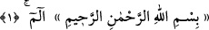
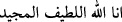
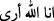
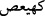
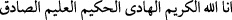
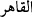
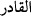
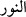
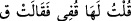
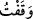

KUR’ÂN VE MUKATTAA HARFLERİ
1. Elif-Lâm-Mîm.
Fâtiha Sûresi muhkem; mânâsı anlaşılan harflerle başlarken, acabâ Bakara sûresi
neden mânâsı anlaşılmayan müteşâbih harflerle başlamıştır? Bu husûs ile alâkalı olarak
Süyûtî el-İtkân isimli eserinde şunları söylemiştir: Bunun hikmeti akıl ve hikmet
sâhiblerinin onun derecelerini bilerek, âcizliklerini anlamaları ve ibret alarak Allah’ın
âyetlerini düşünmeleridir. Ali Dede diye bilinen ârif-i billâh bir şeyhin Havâtimü’l-
hıkem, Hallü’r-rumûz ve Keşfü’l-künûz isimli eserlerinde böyle zikredilmiştir.[174]
Âlimlerin müteşâbih âyetlerle alâkalı pekçok görüşleri vardır. Bir kısmı, müteşâbihin
gizli ilimlerden ve saklı sırlardan olduğuna; yâni bunların ancak Allah’ın bildiği
bilgiler olduğuna işâret ederek “Onlar Kur’ân’ın sırrıdır. Biz zâhirine inanır, mânâsını
Allah’a bırakırız. Kur’ân’da zikredilmesinin hikmeti ise onlara îmân etmeyi taleptir.”
demişlerdir.
Burada “Elif” Allah lafzını, “Lâm” Lâtîf kelimesini, “Mîm” Mecîd kelimesini ifâde
eder. “Elif-Lâm-Mîm” beraberce (
) “Ben, Lâtîf ve Mecîd olan
Allah’ım” demek olur. Nitekim (
) “Elif-Lâm-Râ” (
) “Ben Allah’ım,
görürüm”
demektir.
(
)
“Kâf-Hâ-Yâ-Ayn-Sâd,”
harfleri
ise
(
) “Ben Kerîm, Hâdî, Hakîm, Alîm ve Sâdık olan
Allah’ım” demektir. “Kâf” harfi ise (
) “Kâhir” ve (
) “Kâdir” isimlerine
işârettir. “Nûn” harfi (
) “Nûr” ismine işâret etmektedir. Bütün bunlar hurûf-i
mukattaadır. Her biri Allah’ın isimlerinden alınmıştır. Arapça’da böyle kelimenin bir
kısmını zikretmekle iktifâ, eskiden beri uygulanan bir husustur. Nitekim şâirin şu
sözünde bu vardır: “
” Ben sevgilime dur dedim. O da “Ka” dedi.
Buradaki ( ) “Ka” ile (
) (durdum) mânâsı kasdedilmiştir.
Başka bir görüşe göre, sûrelerin başında böyle harflerin gelmesi, Kur’ân’ın “Elif-Be-
Te” gibi harflerden oluştuğuna delâlet içindir. Kur’ân’ın bir kısmı mukattaa harfleri ile,
bir kısmı müellef; yâni kelime ve cümleler oluşturan harfler ile gelmiştir. Bu durum,
Kur’ân’a meydan okuyanları onun, insanların söz söylemek için bir araya getirdikleri
harflerden meydana geldiğini göstermek içindir. Şâyed bu kelâm beşer gücünün
fevkinde olmasa ve kâdir olan Allah tarafından indirilmeseydi, insanlar onun bir
benzerini yapıp getirebilirdi.
Bu görüş tahkîk ehlinin meylettiği görüştür ama, isâbetli değildir. Zîrâ o takdîrde
zikredilen bu harflerin bir takım mânâlarının ve esrârının olmadığı anlaşılır. Halbuki